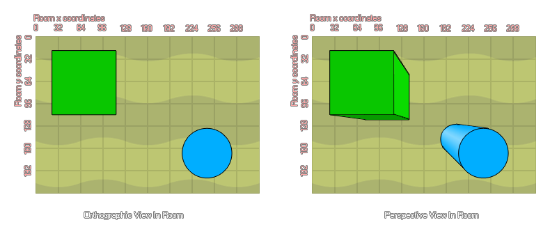

d3d_set_projection_ortho(x, y, w, h, angle)
| Argument | Description |
|---|---|
| x | The x coordinate in the room to look from. |
| y | The y coordinate in the room to look from. |
| w | The width of the projection. |
| h | The height of the projection. |
| angle | The rotation angle of the projection. |
Returns : N/A
Sometimes you temporarily need a normal orthographic projection (this is what is used when there is no 3D active), or you want to return to the default perspective projection, which is what this function is for. It is typically
used to draw an overlay, for example, to show the score or other aspects as this gives a "flat" view of the elements drawn (ie: no perspective). See the image below to get an idea of the difference between orthographic and
perspective views.
Note : You may also need to temporarily switch off hidden surface removal if you want the information to be drawn regardless of the current depth value.

draw_set_color(c_black);
d3d_set_projection_ortho(0, 0, room_width, room_height, 0);
d3d_set_hidden(false);
draw_text(10, 10, 'Score: ' + string(score));
d3d_set_hidden(true);